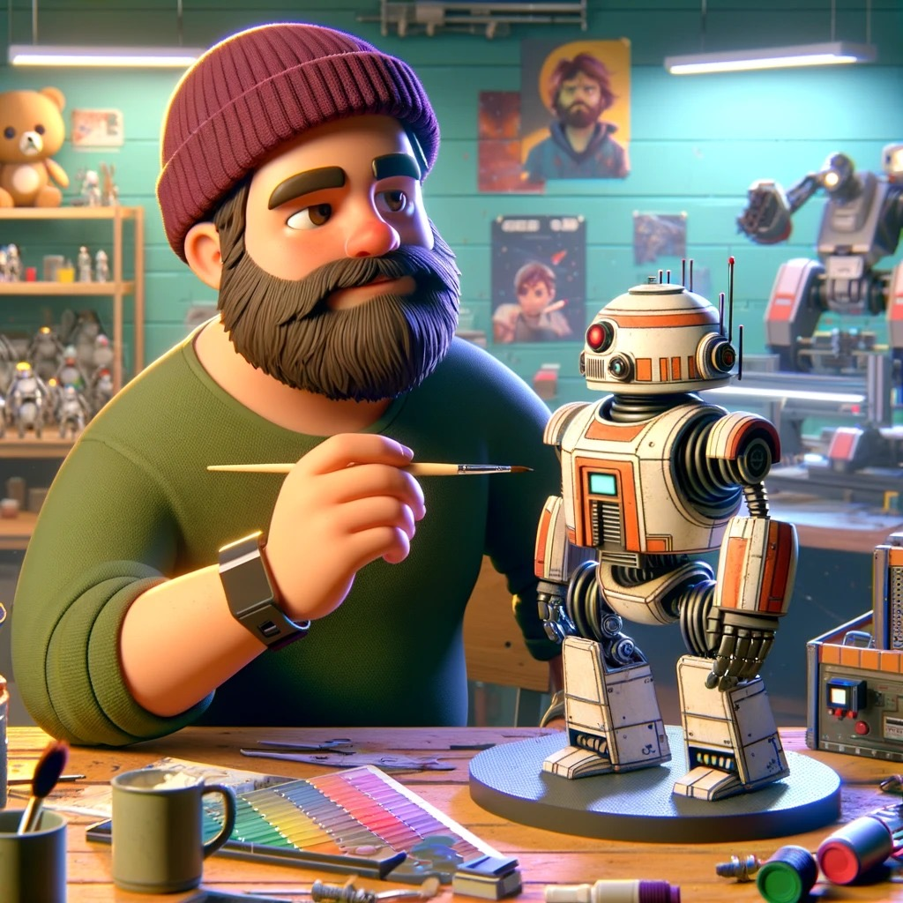

Peter A. Perez
Engineer. Maker. Educator. Roboticist
A Bit
My name is Peter, and the first thing you'll probably notice about me is that I am pretty tall. Once we get past all that you'll probably ask the usual, and find out I am a Cuban American with an affinity for good strong coffee (with espumita) and freshly baked bread.
For my day job I am the Associate STEAM Director at Belen Jesuit Prep School down in Miami, Fl. Nowadays I spend most of my time in the fablab tinkering with robots and multitudes of creations teaching students to do the same.
On my off time I read, build, cook, adventure, and explore whatever strange idea may pop in my head (last week it was those protein bagels people were making on instagram).
A Byte
Now, for the longer story in case that last one peaked your interest. I was born and raised in Miami, Fl and had an affinity for making and tinkering from a young age. My mother told me that she knew any car or toy that she bought me would be taken apart within 48 hours, I believe her. That process continued to grow and evolve through my life, except we can add in putting things back together to my repertoire a few short years after that. This natural curiousity led me to explore engineering and associated careers for my future.
After a few difficult speed bumps in life I found myself in the University of Miami -GO CANES- studying Biomedical Engineering. I planned on building prosthetics. I mean, it was 2008 an Ironman had just come out, what else was there for a young Engineer to do? But life likes to take its turns and instead I ended up focusing on cell and tissue engineering in Dr. Cheung's lab. I started a PhD in the topic and though vastly interesting, I definitely learned that is not what I wanted to do with my life. I became a call center agent, learned how to talk to people that don't want to talk to me. And then I received a fateful call from a friend who asked if I wanted to be a teacher. I said no. Then said well, what is the worst that can happen? (hint, 10 years later I am still a teacher).
I started teaching Biology and Physical Science and due to my background became the understudy for the FIRST Tech Challenge robotics coach. This is where I finally got to do the engineering I wanted to do as a child. Again fate lended its hand and I was offered the position of engineering teacher and to take over the engineering lab. That is the best thing that could have happened to me. I went back to school, UCF this time --GO KNIGHTS-- and started a master's degree in mechanical engineering, my truer passion. But pragmatism, and the fact that I was studying and working at the same time led me to a degree in Industrial Engineering instead with half of the credits in mechanical.
My work at the first school led me to the job I have today. The Associate STEAM Director at Belen Jesuit. This job also led me to finally work with the fablab I am doing this program with, the Moonlighter Fablab. Fun fact, I had looked them up when I worked my first job and wanted to collaborate but never found the time or support to do so. But God works in mysterious ways and I was led right back. Thank God too because now we have been able to do a lot of cool things and hopefully will continue to do so through this program and in the greater Miami area.
My goal is to make sure that people know how to make things so that they can make the world a better place. The Fab Academy is a great way to keep this project going!